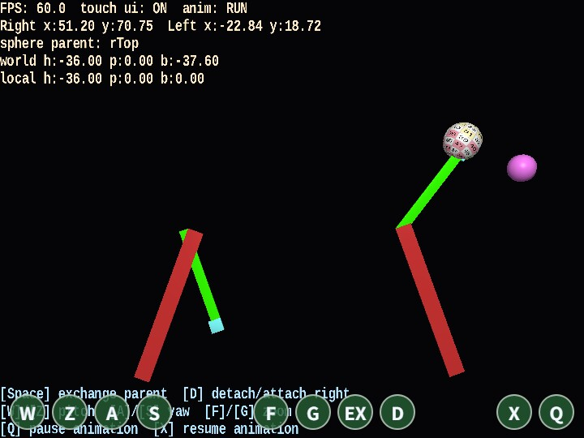

detouch
English | 日本語

Overview
- This sample switches parent-child relationships at runtime with
attach / detach - It is an educational sample for learning hierarchical operations that "replace the parent while preserving the visible position", using both the actual motion and the HUD
How to Run
- Open ./detouch.html
- Use a browser with WebGPU support, and check the help panel and HUD together with the sample when needed
webg Features Used
WebgApp: standard initialization forScreen / Shader / Space / Camera / Input / MessageNode.attach / Node.detachNode.getWorldPosition / getWorldAttitudeWebgApp.setGuideLines / setStatusLines: shows hierarchy state and pose informationTexture + SmoothShader: visualizes the spheresInputController / Touch: unifies keyboard input and touch input under the same operations
Checkpoints
- Confirm that even when the sphere's parent is switched between the tips of the left and right rotating arms, the visible position and attitude of the sphere do not jump, so the world-space preservation behavior can be observed
- Compare the status displays
sphere parent,world h/p/b, andlocal h/p/b, and confirm that the local values change after a parent switch while the visible world-side result is preserved - Compare the difference between
detach/attach rightandexchange parent, and confirm the difference in processing flow between detaching tonulland reconnecting to another parent
Controls
W / Z: rotate the camera pitchA / S: rotate the camera yawF / G: zoom in / outD: toggle detach/attach with the right-end nodeSpace: swap the parent node of the sphere object between left and rightQ: stop the animationX: resume the animation